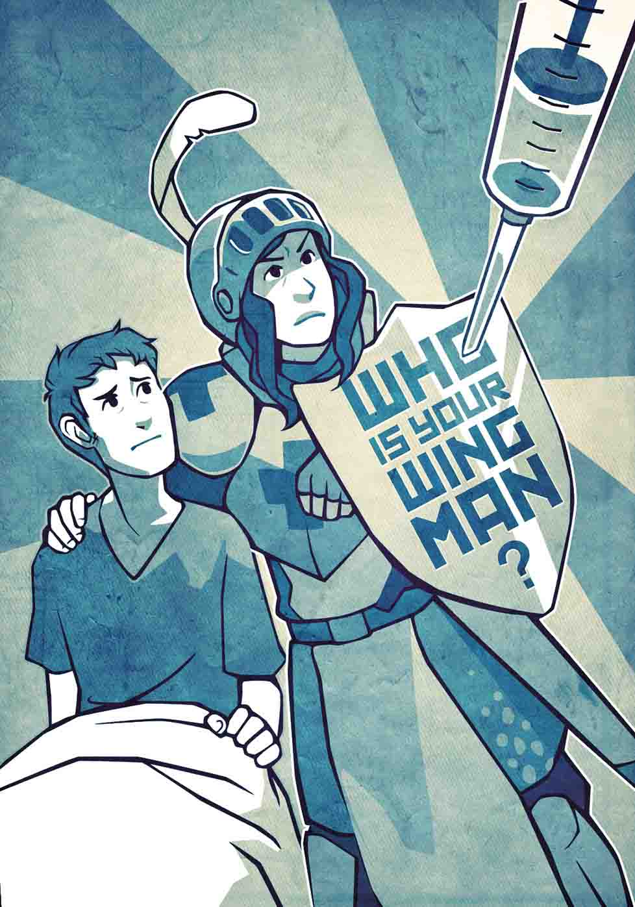

If you are hospitalized, undergoing surgery, or seeing a specialist for a serious condition, bring a friend or relative with you.
Your wingman can help you navigate the experience, understand complex instructions, and advocate for your best interests if you are confused or impaired.
And, while you are well, get a health care proxy, a simple legal document that allows you to appoint a trusted person to make medical decisions for you if you are unable — because of serious accident or illness — to make them yourself.
